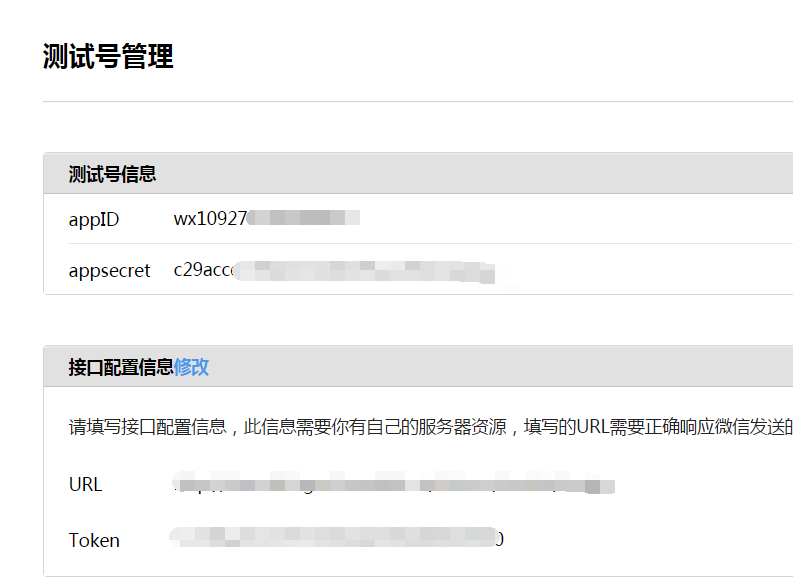
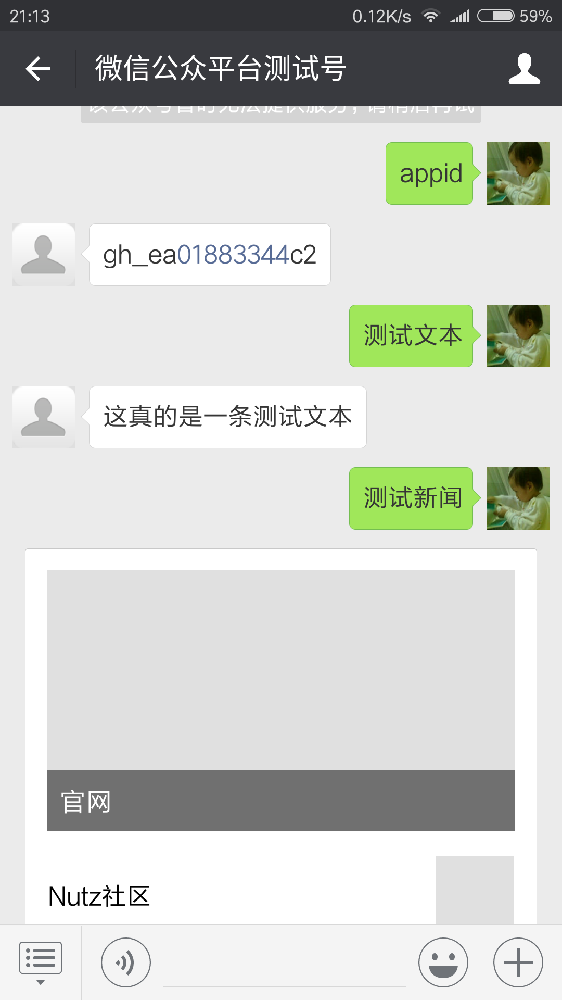

-
4添加依赖
Nutz 为 微信准备了什么?
nutzwx是nutz集成微信所做的jar包,起于2014年. 那时候还只有公众平台,没有微信支付,没有商户平台,没有开放平台...
算了, 你们应该没兴趣看nutzwx项目的发展史的,我删掉吧.
往下看如何集成吧.
首先,你需要一个公众号
是的,我说的是测试号,不是正式的公众号.
访问这个地址 微信公众平台接口测试帐号申请

注册/登录后, 可以看到:

其中,appid和appsecret都会显示,但接口配置信息是需要手工填的, 里面有URL和token.
而URL必须填一个外网地址,而且不能带端口号!!! 很多人会说: 靠,怎么搞!!!? 恩,继续往下看, 先不要关掉这个页面哦.
然后,你需要一个外网地址
也许你登录过nutzcn或者听说过,或者不知道它是什么鬼东西,没关系, 你现在要访问它
地址: NutzCN社区 请使用github登录, 若没有github账号或者翻墙困难,可以使用QQ或微信登录.
登录完成后, 访问 Ngrok内网穿透福利
点击下载配置文件和客户端,按说明启动ngrok,即可获取外网地址.
我们还提供Java版的Ngrok客户端哦 请访问帖子 Ngrok新版客户端
PS: Ngrok是什么鬼东西? 内网穿透, 就是把你本地某个http服务,通过隧道协议, 映射到外网.
若有兴趣了解nutz提供的ngrok实现, 请访问NutzMore上的Ngrok插件
添加依赖
现在,你应该有一个微信测试号和一个外网地址了,接下来,我们需要添加nutzwx了
若使用maven,添加如下配置. 如果不知道怎么配置快照库,请查阅 Maven基本配置
<dependency> <groupId>org.nutz</groupId> <artifactId>nutzwx</artifactId> <version>1.r.62-SNAPSHOT</version> </dependency>
非maven用户,也可以在快照中找到 Nutzwx最新快照 的jar文件,请使用日期最新的哦
添加第一个微信Module
@IocBean
@At("/weixin")
public class WeixinModule { // 并不要求你继承任何东西
/*
wxHandler是被动请求的主要处理类, 里面写的1234567890就是"接口配置信息"里面提到的"token",
*/
protected WxHandler wxHandler = new BasicWxHandler("1234567890");
@At // 拼起来的全路径就是 /weixin/msgin
public View msgin(HttpServletRequest req) throws IOException {
return Wxs.handle(wxHandler, req, "default"); // 最后面的default,可以不写,只是个标识符.
}
}
现在,启动你的web项目,访问 http://127.0.0.1:8080/$项目名称/weixin/msgin
应该会出502之类的提示,那就是对的. 但如果出404,那么,就需要检查启动日志(例如方法名写错导致映射路径错了)
20:51:39.955 WARN (Wxs.java:213) check - bad check : signature=null,timestamp=null,nonce=null
通过外网访问msgin入口方法
现在,确保ngrok已经启动, 访问地址 http://$用户名.ngrok.wendal.cn/$项目名称/weixin/msgin
其中,用户名在ngrok的界面可以看到,通常就是你的nutzcn用户名(去掉下划线)
看清楚地址,不要加端口号哦. 如无意外, 跟你本地访问的效果一样, 后台日志也是出bad check
配置测试号的URL和token
打开测试号管理页面, 填入上一步测试过的外网地址及WeixinModule的token值,按确认
请观察后台日志的变化,若出现下面的日志就代表成功了.
21:07:25.161 INFO (Wxs.java:636) handle - GET? return echostr=5786772326126714267
若出现bad check, 检查token的值哦. 页面上的值需要与WeixinModule的值一致才能成功.
测试被动消息响应
依然是测试号管理页面, 打开你的微信,关注自己.
发送文本信息(2个字): 帮助
公众号将返回如下信息
支持的命令有: 你好 版本 帮助 appid 测试文本 测试新闻 回显
